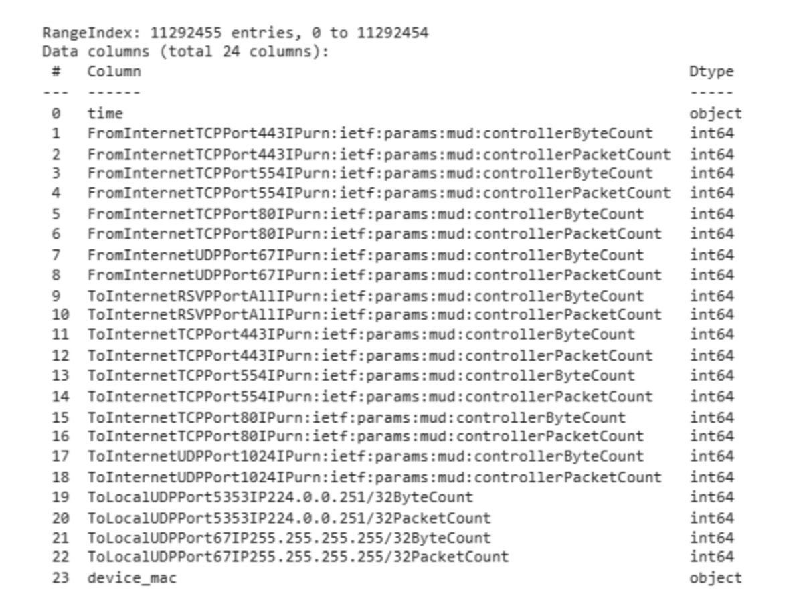

Project Overview
This project involved collaborative work with 4 other data scientists over 10 weeks where we defined the problem, explored and transformed our data, researched solutions, implemented machine learning models to solve the problem outlined and presented our deliverables to coordinators and other data science peers. The raw data was provided by CyAmast. There are many parts of this project which I have chosen to exclude from this blog due to length, however, I hope this will capture the key features of the project.
Background
The Internet of Things (IoT) is a technology that connects various devices, machines, and systems to a single network. It is widely used in many industries because it allows for efficient data gathering. However, these devices often have limited functions and are vulnerable to cyber attacks such as DDoS and MITM, making it important to have protection measures in place, such as network anomaly detection.
Data
The data provided contained time series network data including packet/byte counts in/out of a number of ports of a number of devices. Below is a snapshot:
data.info()
Here we hypothesise if we are able to classify a new datapoint into a particular flow we are able to observe when an anomaly occurs.
Exploratory Data Analysis
Our team began by analysing and understanding the provided data. Python was used to calculate statistics and matplotlib and seaborn packages were utilised to visualise the shape and trends of the time series data. Key observations include:
-
There was high correlation between corresponding in and out flows of each port
-
There were distinct characteristics to each flow type (this is what we want for accurate classification)